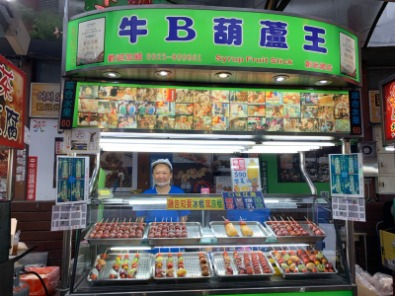
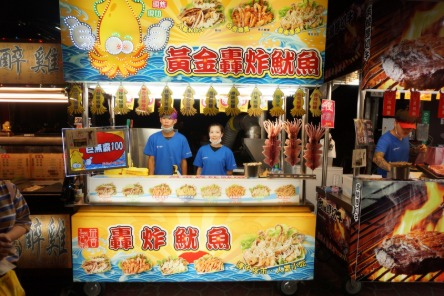
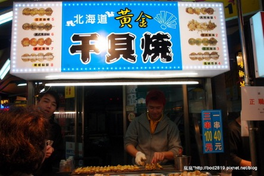

逢甲夜市

心得:一道受歡迎的菜餚。將新鮮水果(草莓、葡萄、番茄…）串在竹籤上，然後浸入糖漿中製成。糖乾燥後在水果周圍形成一層黏稠、鬆脆的糖果。它滿足了人們對美麗食物的熱情。這些水果糖具有透明的玻璃質感，看起來像大理石。
小吃名稱:糖葫蘆
價格:70-190 元心得:一道受歡迎的菜餚。將新鮮水果(草莓、葡萄、番茄…）串在竹籤上，然後浸入糖漿中製成。糖乾燥後在水果周圍形成一層黏稠、鬆脆的糖果。它滿足了人們對美麗食物的熱情。這些水果糖具有透明的玻璃質感，看起來像大理石。

心得:黃金轟炸魷魚位於臺灣夜市入口處的小店，絕對不會讓人失望。店家的魷魚炸得外酥內嫩，金黃誘人的外表搭配香氣四溢的調料，讓人一見就食指大動。 每一口都能感受到魷魚的鮮嫩與外皮的酥脆交織在一起，口感層次豐富。尤其是搭配特製的醬料，酸甜鹹香恰到好處，令人忍不住一口接一口。 夜市熱鬧非凡，剛進門就品嘗到這道招牌美食，為整個夜市之旅開啟了完美的序幕。如果有機會到逢甲夜市，千萬不要錯過這家黃金轟炸魷魚！
小吃名稱:炸魷魚
價格:110/份 元心得:黃金轟炸魷魚位於臺灣夜市入口處的小店，絕對不會讓人失望。店家的魷魚炸得外酥內嫩，金黃誘人的外表搭配香氣四溢的調料，讓人一見就食指大動。 每一口都能感受到魷魚的鮮嫩與外皮的酥脆交織在一起，口感層次豐富。尤其是搭配特製的醬料，酸甜鹹香恰到好處，令人忍不住一口接一口。 夜市熱鬧非凡，剛進門就品嘗到這道招牌美食，為整個夜市之旅開啟了完美的序幕。如果有機會到逢甲夜市，千萬不要錯過這家黃金轟炸魷魚！

心得:在臺灣夜市吃炭烤干貝真的是一場絕妙的美食體驗。新鮮的干貝在炭火上烤製，完整保留了來自海洋的自然甜味。干貝肉質厚實、甜美，特別是非常有彈性，咀嚼時既柔軟又帶有一點韌性。 咬一口下去，干貝的鮮甜與炭火的淡淡煙香在口中交織，讓人一口接一口，完全停不下來。 不僅食物美味，夜市的熱鬧氣氛更增添了體驗的趣味性。這絕對是來臺灣夜市時不可錯過的一道美食！
小吃名稱:炭烤干貝
價格:100/串 元心得:在臺灣夜市吃炭烤干貝真的是一場絕妙的美食體驗。新鮮的干貝在炭火上烤製，完整保留了來自海洋的自然甜味。干貝肉質厚實、甜美，特別是非常有彈性，咀嚼時既柔軟又帶有一點韌性。 咬一口下去，干貝的鮮甜與炭火的淡淡煙香在口中交織，讓人一口接一口，完全停不下來。 不僅食物美味，夜市的熱鬧氣氛更增添了體驗的趣味性。這絕對是來臺灣夜市時不可錯過的一道美食！